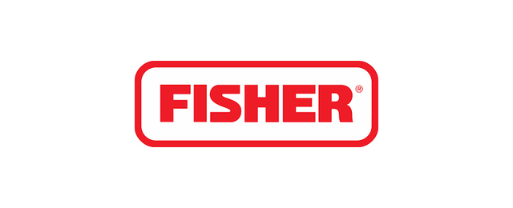
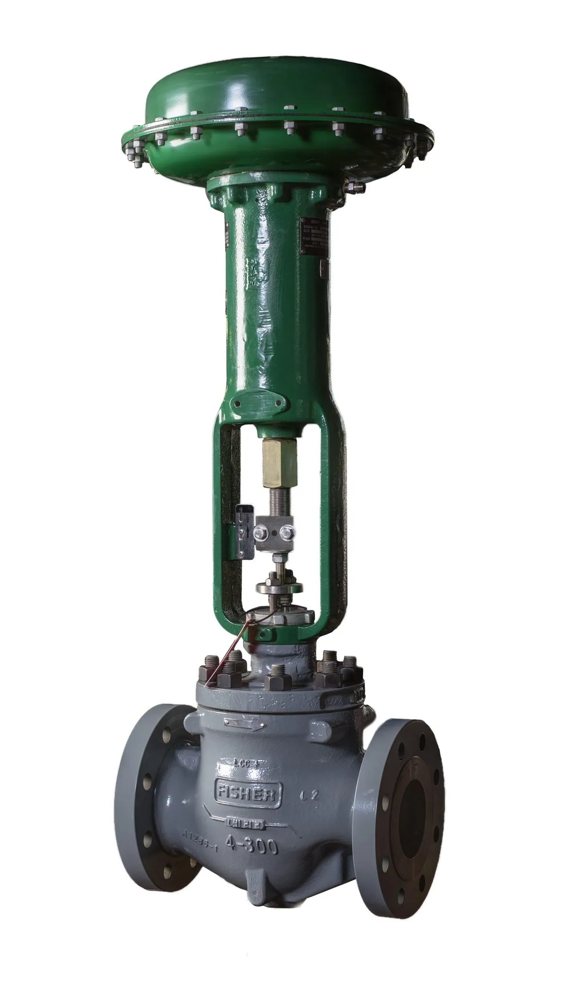
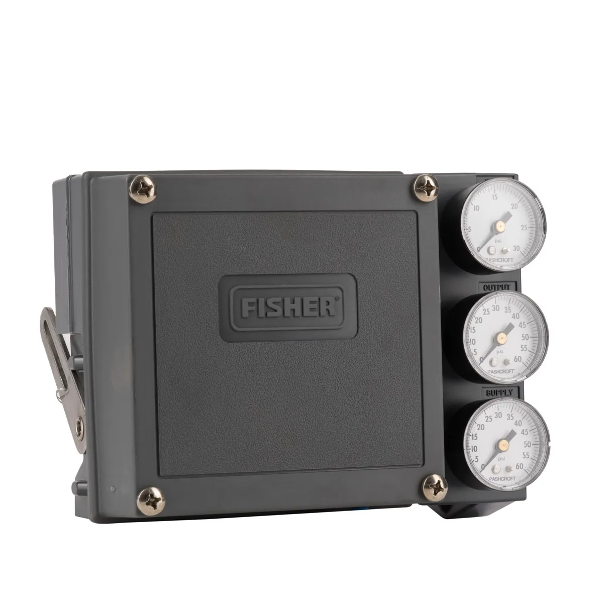
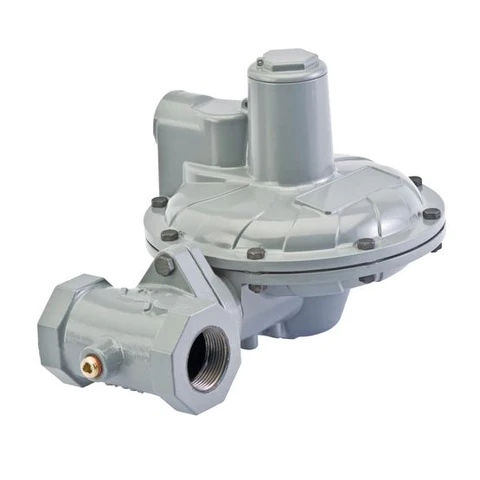

Xuất xứ: Hoa Kỳ (thuộc Emerson)
Fisher là thương hiệu van điều khiển lâu đời và được dùng rộng rãi nhất thế giới, thuộc tập đoàn Emerson. Từ vòng điều khiển áp suất trong nhà máy lọc dầu đến trạm giảm áp khí đô thị, van Fisher cùng bộ định vị FIELDVUE là cấu hình tiêu chuẩn trong hàng nghìn dự án dầu khí, hóa chất, nhiệt điện tại Việt Nam.
Fast Group là đại lý phân phối hàng Fisher chính hãng tại Việt Nam — cung cấp van, positioner, regulator, actuator và phụ tùng Fisher kèm đầy đủ CO/CQ, bảo hành chính hãng 12 tháng kể từ ngày giao hàng. Đội ngũ kỹ thuật từng làm việc nhiều năm tại các công ty dịch vụ dầu khí hàng đầu, quen với cấu hình van của VSP, PTSC, nhà máy điện và lọc hóa dầu.
Khó nhất khi mua Fisher không phải giá mà là đúng mã: một bộ van điều khiển gồm thân van, trim, actuator, positioner và phụ kiện, mỗi phần một model code. Fast Group đối chiếu từ nameplate, datasheet hoặc số serial trước khi báo giá để khách hàng không phải nhận nhầm cấu hình.
Toàn bộ danh mục được hệ thống hóa tại cổng thông tin sản phẩm Fisher Emerson của Fast Group — hơn 640 sản phẩm, phân theo 6 nhóm chức năng, mỗi dòng có bảng biến thể, thông số và tài liệu gốc từ Emerson.
Nếu đang cần mua gấp tại TP.HCM, Vũng Tàu hoặc khu công nghiệp phía Nam, xem hướng dẫn mua Fisher chính hãng và cách kiểm tra nguồn gốc.
William Fisher sáng lập công ty năm 1880 tại Marshalltown, Iowa, khi thiết kế bộ điều áp giữ ổn định áp suất cho máy bơm hơi nước của thành phố — bộ điều áp Fisher Type 1, được xem là điểm khởi đầu của ngành van điều khiển hiện đại.
Năm 1992, Fisher Controls trở thành một phần của Emerson. Từ đó dòng van Fisher đi cùng bộ định vị số FIELDVUE, phần mềm chẩn đoán ValveLink và hệ điều khiển DeltaV, tạo thành chuỗi giải pháp van điều khiển hoàn chỉnh cho nhà máy quá trình.




Van điều khiển là phần tử cuối trong vòng điều khiển — quyết định trực tiếp độ ổn định của áp suất, lưu lượng và nhiệt độ. Fisher có đủ các kiểu thân van: van cầu tịnh tiến dòng easy-e cho phần lớn ứng dụng, van góc cho lưu chất có hạt và áp chênh cao, van xoay V-ball cho bùn và lưu chất mài mòn, van bướm hiệu suất cao cho đường ống cỡ lớn.
Với điều kiện khắc nghiệt, trim Cavitrol III chống xâm thực cho chất lỏng và WhisperFlo giảm ồn khí động học là lý do nhiều nhà máy chỉ định Fisher trong thiết kế.
| Nhóm | Dòng tiêu biểu | Ứng dụng điển hình |
|---|---|---|
| Van cầu (globe) | easy-e ET, EZ, EW · GX · HP | Điều khiển lưu lượng, áp suất cho hơi, khí, chất lỏng |
| Van góc (angle) | EHA, D/DA, FB, HP angle | Choke giếng dầu, xả lỏng bình tách, flashing |
| Van xoay V-ball | V150, V300, V500, CV500 | Bùn, bột giấy, lưu chất có hạt, mài mòn |
| Van bướm hiệu suất cao | 8580, 8560, A11 | Đường ống cỡ lớn, nước, khí, hóa chất |
| Actuator | 667, 657, 585C, 1052, 1061 | Màng lò xo, piston, xoay — theo lực đẩy và fail-safe |
Chi tiết từng dòng, bảng biến thể và hướng dẫn chọn trim xem tại danh mục van điều khiển Fisher theo kiểu thân van.
Bộ định vị quyết định van có đi đúng vị trí lệnh hay không. FIELDVUE DVC6200 là bộ điều khiển van số phổ biến nhất hiện nay: đo vị trí không tiếp xúc, giao tiếp HART, chẩn đoán độ ma sát, rò rỉ khí và độ lệch hành trình ngay khi van đang chạy.
Nhiều nhà máy nâng cấp từ positioner khí nén 3582, 3610J lên DVC6200 để giảm thời gian dừng máy bảo trì. Fast Group hỗ trợ chọn bộ gá lắp đúng với actuator đang dùng.
| Nhóm | Dòng tiêu biểu | Ghi chú chọn mã |
|---|---|---|
| Bộ điều khiển van số | DVC6200, DVC6200 SIS, DVC2000, DVC7K | Chọn theo giao thức HART / Foundation Fieldbus / Profibus và cấp an toàn SIL |
| Positioner khí nén | 3582, 3582i, 3610J, 3570 | Van tịnh tiến hay van xoay, tác động đơn hay kép |
| Bộ chuyển đổi I/P | 846, i2P-100, 546 | 4–20 mA sang khí nén; i2P-100 dùng được khí thiên nhiên |
| Lọc điều áp cấp khí | 67CFR, 67D | Cấp khí sạch, ổn định cho positioner |
| Volume booster, trip valve | 2625, 377 | Tăng tốc hành trình; giữ vị trí an toàn khi mất khí |
So sánh DVC6200, 3582 và 3610J theo ứng dụng tại bài hướng dẫn chọn positioner Fisher; thông số đầy đủ của FIELDVUE DVC6200.
Mảng regulator của Fisher phục vụ từ cấp khí thiết bị vài bar đến trạm city gate áp vào hàng trăm bar. Các dòng 627, 299H, CS800 cho khí công nghiệp và thương mại; 99, 310A, EZH cho áp cao, lưu lượng lớn; 1301F cấp khí pilot áp rất cao.
Trạm khí an toàn cần cả bảo vệ quá áp: van xả 289, slam-shut và cấu hình monitor. Fast Group hỗ trợ tính cỡ regulator theo áp vào, áp ra và lưu lượng thực tế.
| Nhóm | Dòng tiêu biểu | Phạm vi |
|---|---|---|
| Regulator tác động trực tiếp | 627, CS400, CS800, 64 | Khí công nghiệp, đầu đốt, farm tap |
| Regulator có pilot | 299H, 99, 310A, EZH/EZHSO, EZR | Áp cao, lưu lượng lớn, trạm phân phối khí |
| Van giảm áp hơi | 92B, MR95 | Gia nhiệt quá trình, trao đổi nhiệt |
| Van xả, áp ngược | 289, 1805, 630R | Bảo vệ quá áp phía sau regulator |
| Bao trùm bồn | T205, Y602, ACE95 | Giữ áp dương khí trơ trên bồn chứa |
Xem nhóm regulator và van giảm áp Fisher để tra từng dòng theo dải áp và lưu chất.
Một bộ van Fisher gồm thân van, trim, actuator và positioner, mỗi phần có model riêng trên nameplate. Chỉ gửi “easy-e 2 inch” thì chưa đủ để báo giá đúng — cần thêm cỡ trim, đặc tính, vật liệu và kiểu actuator.
Số serial (FS number) cho phép truy xuất đúng cấu hình gốc từ nhà máy. Đây là cách nhanh nhất để đặt phụ tùng như trim, seat ring, packing cho van đã lắp nhiều năm.
DVC6200 có bản HART, Foundation Fieldbus, Profibus và bản SIS. Cùng hình dáng nhưng không thay lẫn được về mặt giao tiếp với hệ DCS.
Cùng model 627 nhưng dải lò xo và cỡ orifice khác nhau cho áp ra rất khác nhau. Luôn gửi kèm áp vào, áp ra và lưu lượng cần.
Fast Group là đại lý phân phối hàng Fisher chính hãng, nguồn hàng có chứng từ của Emerson. Mỗi lô hàng đi kèm:
Đối chiếu nameplate, tính cỡ van và regulator, chọn bộ gá positioner, đề xuất mã thay thế cho model đã ngừng sản xuất. Dịch vụ tại hiện trường tùy trường hợp.
Nhận BOQ/BOM, rà soát toàn bộ tag van, đánh dấu mã ngừng sản xuất và báo giá theo từng dòng. Xem thêm bộ chứng từ CO/CQ khi mua van Fisher.
Fast Group là đại lý phân phối hàng Fisher chính hãng tại Việt Nam, cung cấp hàng có nguồn gốc Emerson kèm CO/CQ và bảo hành chính hãng 12 tháng kể từ ngày giao hàng.
Ảnh nameplate thân van, actuator, positioner hoặc model code đầy đủ, số lượng và yêu cầu chứng từ. Nếu là dự án mới, gửi datasheet van (lưu chất, áp suất, nhiệt độ, lưu lượng).
Emerson thường có model kế nhiệm tương thích lắp đặt. Fast Group đối chiếu theo số serial và kích thước để đề xuất mã thay thế và phụ tùng phù hợp.
DVC6200 phù hợp khi cần HART, chẩn đoán van và giảm công bảo trì; 3582 phù hợp khi chỉ cần thay thế tương đương trên hệ khí nén thuần. Chi tiết xem bài so sánh positioner trên cổng Fisher của Fast Group.
Có. Mỗi lô hàng có CO, CQ của nhà sản xuất cùng invoice, packing list phục vụ nghiệm thu và thanh toán.
Toàn quốc, thường xuyên cho khách hàng tại TP.HCM, Bà Rịa – Vũng Tàu, Đồng Nai, Bình Dương và các khu công nghiệp dầu khí, lọc hóa dầu.
Gửi model, nameplate hoặc datasheet van — Fast Group kiểm tra cấu hình, báo giá hàng Fisher chính hãng kèm CO/CQ.